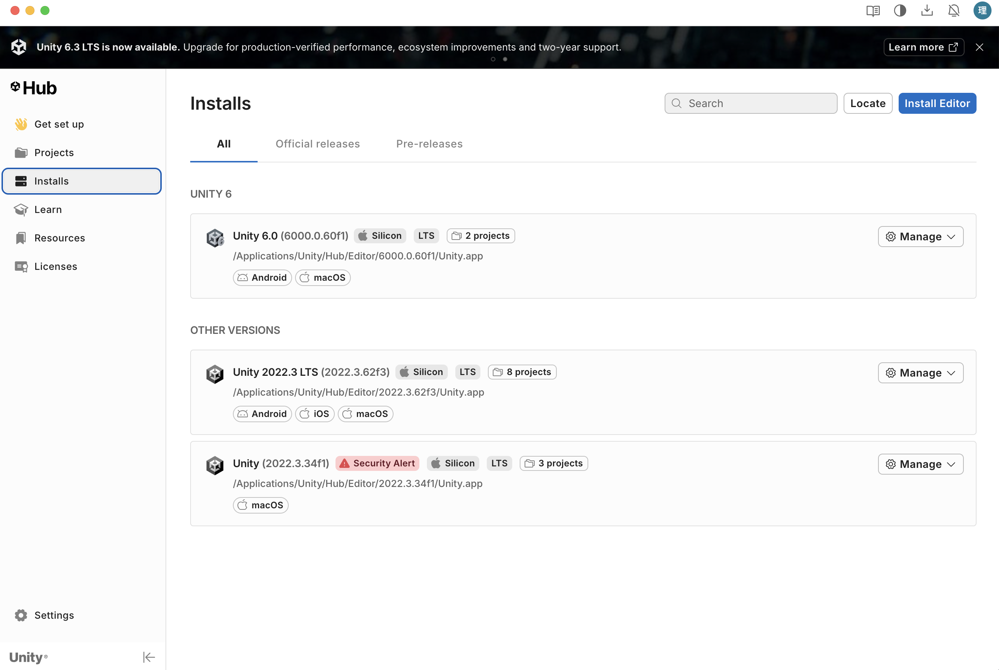

Author: Zeyu Liang
I could not open either of the two links provided in the PDF. However, I found an official tutorial on the Unity Learn platform called "Create Your First Project", which I used instead.
I already had some previous experience with Unity, so I skipped the step of downloading Unity Hub and the Unity Editor. I already had both installed and also had a Unity account.
Figure 3. The Unity version that I had installed on my computer.